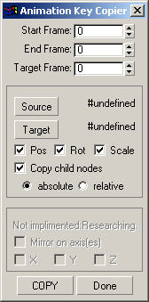

|
Animation Key Copy

The utility takes animation data from a start frame to and end frame
and copies it a starting point called Target Frame. To do
this we must provide a source and target object (if target is undefined
then the target is assumed to be the source, which key types to copy,
wheither to copy a hierarchy(i.e. child nodes as well) and whether to
use absolute or relative calculation of the movment between key states.
- Start Frame - start point for keys to copy
- End fFrame - end point of copied data
- Target Frame - point at chich copied key block starts to
placed
- Source - the source object of the key data
- Target - the target where the key data is being copied to.
If it is undefined then the target is the source
- Pos, Rot, Scale - The position, rotation and scale keys.
Selecting them indicates keys of that type are to be included in the
copy
- Copy child nodes - copies the key data on the hierarchy
starting source onto the hierarchy starting at target. Obviously both
hierarchies must have the same shape
- absolute/relative - how the transition from rotation key to
rotation is calculated
|
|